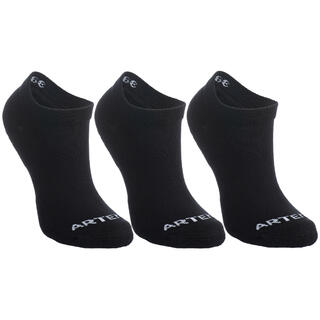

Con tejido de rizo grueso en todo el calcetín para reducir el riesgo de
aparición de ampollas.
Un hilo elástico envuelve todo el calcetín y aporta una excelente sujeción del pie y del tobillo,
tratándose de un calcetín largo o de media caña.
Precio: 12.99$